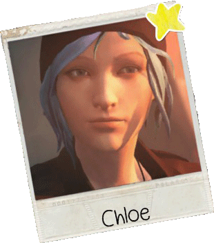

Chloe是Max从小最好的朋友。五年前，Max离开小镇，而她的父亲William也因车祸去世。双重打击使她的性格变得格外叛逆。她将头发剪短并 染成蓝色，与当地毒贩密切往来，还从优等生堕落为小混混，最终被Blackwell Academy要求退学。William去世后，Chloe的母亲Joyce改嫁。 继父David是一名退伍军人，因此对Chloe相当严格。Chloe与其摩擦不断，二人形如仇敌。在这五年间，Chloe遇见了一个陪伴她走过最艰难岁 月的人——Rachel Amber，她让Chloe逐渐走出阴影。然而五年后，Rachel却突然失踪。Max的意外回归使Chloe再见希望。二人开始了对 Rachel Amber失踪一事的探索……